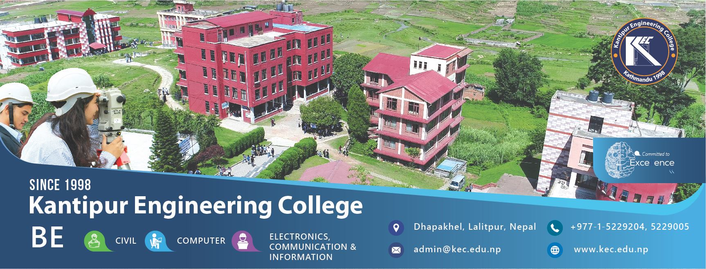

WELCOME
KEC – Kantipur Engineering College, under the affiliation of Tribhuvan University, has been imparting engineering education since 1998 with the objective to produce qualified and proficient engineers capable of facing the engineering challenges of this modern era, where science and technology is dominating every fields of our life. At the time, engineering subjects were revolutionary—today, they’re more important than ever. In these years, we put enormous efforts and spent a lot of resources to pursue excellence in engineering education. At present, KEC is one of the largest and among the few colleges having its own physical infrastructure. To date, we have produced thirty six batches of engineers in the field of Civil, Computer and Electronics & Communication Engineering. Most of our graduates are performing well both nationally and internationally.
The acumen, teamed with KEC’s core commitment of excellence in education, ensures that our students will be given the best possible opportunity to achieve the skills required to succeed in their chosen profession- both today and tomorrow. We welcome all the students, who are determined to build their career in the field of engineering.
Total no. of seats available for BE.Civil, BE.Computer & BE.Electronic & Communication:
| Civil |
Computer |
Electronic & Comunication |
| 96 |
96 |
96 |
Kantipur Engineering College Location:
Click here for KEC Location
About Us
Introduction
In recent times, a good deal of anxious attention has been paid, all over the world, to the utter significance and direct influence of science and technology on our modern lifestyle. Twenty first century is indeed identified as the age of science and technology. Moreover, the progress of any country in the contemporary world depends entirely upon the improvement made by it in the field of technology. In this context, engineering education plays a meaningful and substantial role that cannot be excluded.
Of late, the Institute of Engineering was the only institute responsible for imparting engineering education in Nepal which alone could not fulfill the growing demands of our nation. A large sum of national currency drifted out of the country in the name of engineering education.
With these facts in mind, Kantipur Engineering College, abbreviated as KEC was established in 1998 with BE program in Civil Engineering in a rented building at Sitapaila Chowk, Kathmandu. Besides, the college in 1999 in collaboration with the University of Belarus, started a BE program in Civil and Industrial Engineering under Extra-Mural faculty of the Polotsk State University, Belarus. With a specific objective of imparting quality education, in 1999 the college shifted to its own complex at Dhapakhel, Lalitpur, a location best suited for engineering education inside Kathmandu Valley with peaceful and pollution free environment. The college started BE in Computer Engineering and BE in Electronics and Communication Engineering from 2000 and 2002, respectively. KEC endeavors to fabricate accomplished and capable engineers proficient enough to face the dynamic changes of the present century at a relatively tenable cost. BE in Electrical Engineering and Bachelor in Architecture are in pipeline.
KEC is a second oldest private engineering college of Nepal and is affiliated to Tribhuvan University. Today Kantipur Engineering College is one of the best engineering colleges of Nepal in terms of quality engineering education, peaceful and pollution free environment, own physical infrastructure, and international linkage.
Registration Form